Gaussianization Flows (Details)¶
#@title Install Packages
# %%capture
try:
import sys, os
from pyprojroot import here
# spyder up to find the root
root = here(project_files=[".here"])
# append to path
sys.path.append(str(root))
except ModuleNotFoundError:
import os
os.system("pip install objax chex")
os.system("pip install git+https://github.com/IPL-UV/rbig_jax.git#egg=rbig_jax")
# jax packages
import jax
import jax.numpy as jnp
from jax.config import config
# import chex
config.update("jax_enable_x64", False)
import objax
import chex
import numpy as np
from functools import partial
# library functions
from rbig_jax.data import get_classic
from rbig_jax.plots import plot_joint, plot_joint_prob, plot_info_loss
KEY = jax.random.PRNGKey(123)
# logging
import tqdm
import wandb
# plot methods
import matplotlib.pyplot as plt
from matplotlib import cm
import seaborn as sns
import corner
from IPython.display import HTML
sns.reset_defaults()
sns.set_context(context="talk", font_scale=0.7)
%matplotlib inline
%load_ext autoreload
%autoreload 2
INFO:tensorflow:Enabling eager execution
INFO:tensorflow:Enabling v2 tensorshape
INFO:tensorflow:Enabling resource variables
INFO:tensorflow:Enabling tensor equality
INFO:tensorflow:Enabling control flow v2
WARNING:absl:No GPU/TPU found, falling back to CPU. (Set TF_CPP_MIN_LOG_LEVEL=0 and rerun for more info.)
Demo Data¶
from sklearn.preprocessing import StandardScaler
# %%wandb
# get data
seed = 123
n_samples = 5_000
n_features = 2
data = get_classic(n_samples, seed=123)
data = StandardScaler().fit_transform(data)
# plot data
fig = corner.corner(data, color="blue", hist_bin_factor=2)
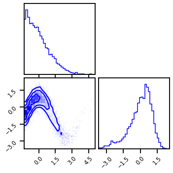
X = jnp.array(data, dtype=np.float32)
Model¶
Layer 1 - Mixture Gaussian CDF¶
from rbig_jax.transforms.parametric.mixture.logistic import InitMixtureLogisticCDF
from rbig_jax.transforms.parametric.mixture.gaussian import InitMixtureGaussianCDF
# spline parameters
range_min = -10.0
n_components = 10
n_features = 2
shape = (2,)
key = jax.random.PRNGKey(123)
init_mixcdf_f = InitMixtureGaussianCDF(
n_components=n_components,
)
mcdf_bijector = init_mixcdf_f(key, n_features)
Forward Transformation¶
X_l1 = mcdf_bijector.forward(X)
# plot
fig = corner.corner(X_l1, color="red", hist_bin_factor=2)
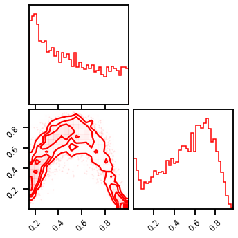
Inverse Transformation¶
X_approx = mcdf_bijector.inverse(X_l1)
# plot
fig = corner.corner(X_approx, color="purple", hist_bin_factor=2)
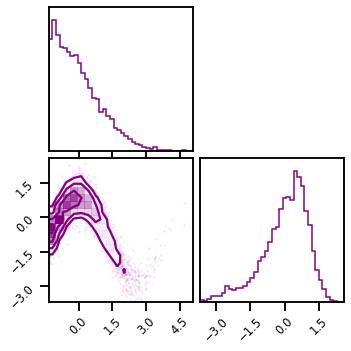
Gradient Transformation¶
X_ldj = mcdf_bijector.forward_log_det_jacobian(X)
# plot
fig = corner.corner(X_ldj, color="green", hist_bin_factor=2)
WARNING:root:Too few points to create valid contours
Layer II - Logit Transform¶
# Logit transform
from distrax._src.bijectors.sigmoid import Sigmoid
from distrax._src.bijectors.inverse import Inverse
logit_bijector = Inverse(Sigmoid())
# from rbig_jax.transforms.logit import InitLogit
# # layer parameters
# init_func = InitLogit()
# # initialize the bijector
# key, hh_rng = jax.random.split(key, 2)
# bijectors.append(Inverse(Sigmoid()))
# logit_bijector = init_func(hh_rng, n_features)
logit_bijector = Inverse(Sigmoid())
Forward Transformation¶
X_l2 = logit_bijector.forward(X_l1)
# plot
fig = corner.corner(X_l2, color="red", hist_bin_factor=2)
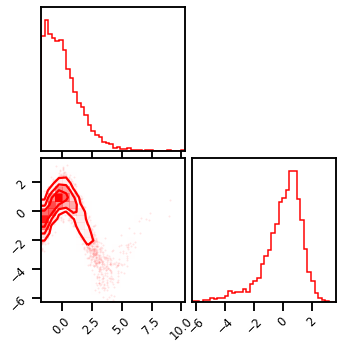
Inverse Transformation¶
X_l1_approx = logit_bijector.inverse(X_l2)
# plot
fig = corner.corner(X_l1_approx, color="purple", hist_bin_factor=2)
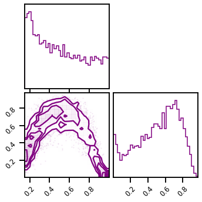
Gradient Transformation¶
X_l2_ldj = logit_bijector.forward_log_det_jacobian(X_l1)
# plot
fig = corner.corner(X_l2_ldj, color="green", hist_bin_factor=2)
WARNING:root:Too few points to create valid contours
Layer III - HouseHolder Reflections¶
from rbig_jax.transforms.parametric.householder import InitHouseHolder
# layer parameters
n_reflections = 2
init_func = InitHouseHolder(n_reflections=n_reflections)
# initialize the bijector
key, hh_rng = jax.random.split(key, 2)
hh_bijector = init_func(hh_rng, n_features)
Forward Transformation¶
X_l3 = hh_bijector.forward(X_l2)
# plot
fig = corner.corner(X_l3, color="red", hist_bin_factor=2)
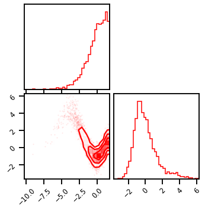
Inverse Transformation¶
X_l2_approx = hh_bijector.inverse(X_l3)
# plot
fig = corner.corner(X_l2_approx, color="purple", hist_bin_factor=2)
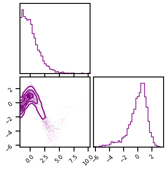
Gradient Transformation¶
X_l3_ldj = hh_bijector.forward_log_det_jacobian(X_l2)
chex.assert_equal(X_l3_ldj.min(), X_l3_ldj.max())
Chaining Transformations¶
from rbig_jax.transforms.base import cascade_forward_and_log_det, cascade_inverse_and_log_det
Forward Transformation¶
# initialize list of bijectors
bijectors = [
mcdf_bijector,
logit_bijector,
hh_bijector
]
# cascade the transform
X_l2, X_l2_ldj = cascade_forward_and_log_det(bijectors, X)
# plot latent space
fig = corner.corner(X_l2, color="red", hist_bin_factor=2)
# plot gradient
fig = corner.corner(X_l2_ldj, color="orange", hist_bin_factor=2)
WARNING:root:Too few points to create valid contours
 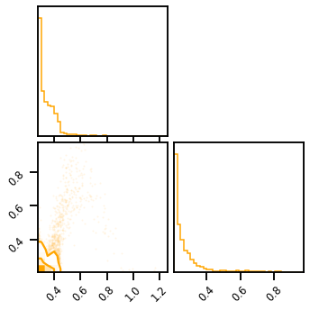
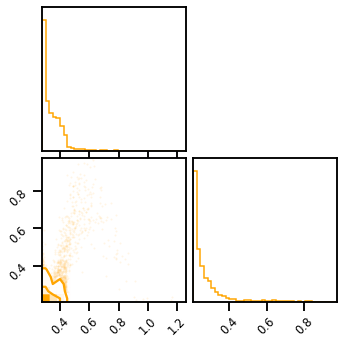
Inverse Transformation¶
# cascade the transform
X_approx, _ = cascade_inverse_and_log_det(bijectors, X_l2)
# plot latent space
fig = corner.corner(X_approx, color="blue", hist_bin_factor=2)
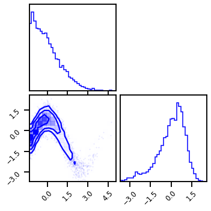
Convenience Function¶
from typing import List, Iterable
from rbig_jax.transforms.base import BijectorChain
# initialize chain
chain_bijectors = BijectorChain(bijectors=bijectors)
X_l3.min(), X_l3.max(), X_l3.shape
(DeviceArray(-10.286362, dtype=float32),
DeviceArray(6.2877326, dtype=float32),
(5000, 2))
X_l3_ldj.min(), X_l3_ldj.max(), X_l3_ldj.shape
(DeviceArray(0., dtype=float32), DeviceArray(0., dtype=float32), (5000, 2))
# cascade the transform
X_l3, X_l3_ldj = chain_bijectors.forward_and_log_det(X)
# plot latent space
fig = corner.corner(X_l3, color="red", hist_bin_factor=2)
# plot gradient
fig = corner.corner(X_l3_ldj, color="orange", hist_bin_factor=2)
WARNING:root:Too few points to create valid contours
Training¶
from rbig_jax.data import DensityDataset, collate_fn
import torch.multiprocessing as multiprocessing
from torch.utils.data import DataLoader
# multiprocessing.set_start_method("spawn")
# initialize dataset
ds = DensityDataset(np.array(data))
# initialize dataloader
batch_size = 256
shuffle = True
dl = DataLoader(
ds, batch_size=batch_size, shuffle=shuffle, collate_fn=None, num_workers=0
)
# spline parameters
n_components = 20
n_features = 2
shape = (2,)
key = jax.random.PRNGKey(123)
# init_mixcdf_f = InitMixtureLogisticCDF(
# n_components=n_components,
# )
init_mixcdf_f = InitMixtureGaussianCDF(
n_components=n_components,
)
mcdf_bijector = init_mixcdf_f(key, n_features)
# Logit transform
logit_bijector = Inverse(Sigmoid())
# Householder Transformation
n_reflections = 2
init_func = InitHouseHolder(n_reflections=n_reflections)
# initialize the bijector
key, hh_rng = jax.random.split(key, 2)
hh_bijector = init_func(hh_rng, n_features)
# create chain
bijectors = [mcdf_bijector, logit_bijector, hh_bijector]
# bijectors = [mcdf_bijector, logit_bijector]
from rbig_jax.models import GaussianizationFlow
from distrax._src.distributions.normal import Normal
# create base dist
base_dist = Normal(jnp.zeros((n_features,)),jnp.ones((n_features,)))
# create flow model
gf_model = GaussianizationFlow(base_dist=base_dist, bijectors=bijectors)
Optimizers¶
from jax.experimental import optimizers
from rbig_jax.training.parametric import init_train_op, init_gf_train_op, train_model
lr = 0.05
optimizer = optimizers.adam(step_size=lr)
jitted = True
epochs = 50
# train model
final_bijector, losses = train_model(gf_model, dl, epochs=epochs, optimizer=optimizer, lr=lr, jitted=jitted)
100%|██████████| 50/50 [00:08<00:00, 6.20it/s, loss=2.5892]
Training Loop¶
plt.plot(losses)
[<matplotlib.lines.Line2D at 0x7fe3adca1e80>]
Results¶
X_trans = final_bijector.forward(data)
# X_trans, _ = final_bijector.forward_and_log_det(data)
fig = corner.corner(X_trans, color="Red")
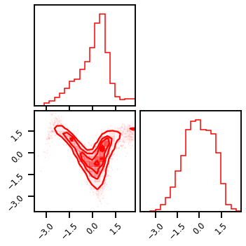
X_approx = final_bijector.inverse(X_trans)
fig = corner.corner(X_approx, color="Blue")
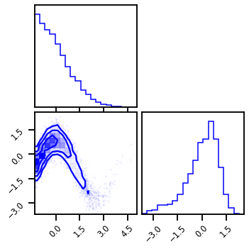
More Layers¶
# spline parameters
n_components = 20
n_features = 2
shape = (2,)
key = jax.random.PRNGKey(123)
# init_mixcdf_f = InitMixtureLogisticCDF(
# n_components=n_components,
# )
init_mixcdf_f = InitMixtureGaussianCDF(
n_components=n_components,
)
# Logit Transformation
logit_bijector = Inverse(Sigmoid())
# Householder Transformation
n_reflections = 2
init_hh_func = InitHouseHolder(n_reflections=n_reflections)
# create keys for all inits
n_layers = 5
bijectors = []
rng, *layer_rngs = jax.random.split(KEY, num=n_layers)
for irng in layer_rngs:
# create keys for all inits
bijectors.append(init_mixcdf_f(irng, n_features))
# create keys for all inits
# bijectors.append(init_logit_func(irng, n_features))
bijectors.append(logit_bijector)
# create keys for all inits
bijectors.append(init_hh_func(hh_rng, n_features))
# # create chain
# chain_bijectors = BijectorChain(bijectors=bijectors)
from rbig_jax.models import GaussianizationFlow
from distrax._src.distributions.normal import Normal
# create base dist
base_dist = Normal(jnp.zeros((n_features,)),jnp.ones((n_features,)))
# create flow model
gf_model = GaussianizationFlow(base_dist=base_dist, bijectors=bijectors)
Training¶
from jax.experimental import optimizers
from rbig_jax.training.parametric import init_train_op, init_gf_train_op, train_model
# lr = 0.05
lr = 0.005
optimizer = optimizers.adam(step_size=0.05)
jitted = True
# epochs = 150
epochs = 100
# train model
final_bijector, losses = train_model(gf_model, dl, epochs=epochs, optimizer=optimizer, lr=lr, jitted=jitted)
100%|██████████| 100/100 [00:34<00:00, 2.92it/s, loss=nan]
Results¶
plt.plot(losses)
[<matplotlib.lines.Line2D at 0x7fe3ad8b3400>]
Latent Space¶
%%time
X_trans = final_bijector.forward(data)
fig = corner.corner(X_trans, color="Red")
---------------------------------------------------------------------------
ValueError Traceback (most recent call last)
<timed exec> in <module>
~/.conda/envs/jax_py38/lib/python3.8/site-packages/corner/corner.py in corner(xs, bins, range, weights, color, hist_bin_factor, smooth, smooth1d, labels, label_kwargs, titles, show_titles, title_fmt, title_kwargs, truths, truth_color, scale_hist, quantiles, verbose, fig, max_n_ticks, top_ticks, use_math_text, reverse, labelpad, hist_kwargs, **hist2d_kwargs)
313 if smooth1d is None:
314 bins_1d = int(max(1, np.round(hist_bin_factor[i] * bins[i])))
--> 315 n, _, _ = ax.hist(
316 x,
317 bins=bins_1d,
~/.conda/envs/jax_py38/lib/python3.8/site-packages/matplotlib/__init__.py in inner(ax, data, *args, **kwargs)
1436 def inner(ax, *args, data=None, **kwargs):
1437 if data is None:
-> 1438 return func(ax, *map(sanitize_sequence, args), **kwargs)
1439
1440 bound = new_sig.bind(ax, *args, **kwargs)
~/.conda/envs/jax_py38/lib/python3.8/site-packages/matplotlib/axes/_axes.py in hist(self, x, bins, range, density, weights, cumulative, bottom, histtype, align, orientation, rwidth, log, color, label, stacked, **kwargs)
6646 # this will automatically overwrite bins,
6647 # so that each histogram uses the same bins
-> 6648 m, bins = np.histogram(x[i], bins, weights=w[i], **hist_kwargs)
6649 tops.append(m)
6650 tops = np.array(tops, float) # causes problems later if it's an int
<__array_function__ internals> in histogram(*args, **kwargs)
~/.conda/envs/jax_py38/lib/python3.8/site-packages/numpy/lib/histograms.py in histogram(a, bins, range, normed, weights, density)
790 a, weights = _ravel_and_check_weights(a, weights)
791
--> 792 bin_edges, uniform_bins = _get_bin_edges(a, bins, range, weights)
793
794 # Histogram is an integer or a float array depending on the weights.
~/.conda/envs/jax_py38/lib/python3.8/site-packages/numpy/lib/histograms.py in _get_bin_edges(a, bins, range, weights)
424 raise ValueError('`bins` must be positive, when an integer')
425
--> 426 first_edge, last_edge = _get_outer_edges(a, range)
427
428 elif np.ndim(bins) == 1:
~/.conda/envs/jax_py38/lib/python3.8/site-packages/numpy/lib/histograms.py in _get_outer_edges(a, range)
313 'max must be larger than min in range parameter.')
314 if not (np.isfinite(first_edge) and np.isfinite(last_edge)):
--> 315 raise ValueError(
316 "supplied range of [{}, {}] is not finite".format(first_edge, last_edge))
317 elif a.size == 0:
ValueError: supplied range of [nan, nan] is not finite
Inverse Transform¶
%%time
X_approx = final_bijector.inverse(X_trans)
fig = corner.corner(X_approx, color="Blue")
---------------------------------------------------------------------------
ValueError Traceback (most recent call last)
<timed exec> in <module>
~/.conda/envs/jax_py38/lib/python3.8/site-packages/corner/corner.py in corner(xs, bins, range, weights, color, hist_bin_factor, smooth, smooth1d, labels, label_kwargs, titles, show_titles, title_fmt, title_kwargs, truths, truth_color, scale_hist, quantiles, verbose, fig, max_n_ticks, top_ticks, use_math_text, reverse, labelpad, hist_kwargs, **hist2d_kwargs)
216 m = np.array([e[0] == e[1] for e in range], dtype=bool)
217 if np.any(m):
--> 218 raise ValueError(
219 (
220 "It looks like the parameter(s) in "
ValueError: It looks like the parameter(s) in column(s) 0, 1 have no dynamic range. Please provide a `range` argument.
Log Probability¶
%%time
from rbig_jax.data import generate_2d_grid
# general grid points
xyinput = generate_2d_grid(X, 500, buffer=0.2)
# calculate log probability
X_log_prob = final_bijector.score_samples(xyinput)
CPU times: user 9.36 s, sys: 3.84 s, total: 13.2 s
Wall time: 2.84 s
Plot: Original Density¶
# Original Density
n_samples = 1_000_000
n_features = 2
X_plot = get_classic(n_samples, seed=123)
X_plot = StandardScaler().fit_transform(X_plot)
# Estimated Density
cmap = cm.magma # "Reds"
probs = jnp.exp(X_log_prob)
# probs = np.clip(probs, 0.0, 1.0)
# probs = np.clip(probs, None, 0.0)
cmap = cm.magma # "Reds"
fig, ax = plt.subplots(ncols=2, figsize=(12,5))
h = ax[0].hist2d(X_plot[:, 0], X_plot[:, 1], bins=512, cmap=cmap, density=True, vmin=0., vmax=1.)
ax[0].set_title("True Density")
ax[0].set(xlim=[X_plot[:, 0].min(), X_plot[:,0].max()], ylim=[X_plot[:,1].min(), X_plot[:,1].max()])
h1 = ax[1].scatter(xyinput[:, 0], xyinput[:, 1], s=1, c=probs, cmap=cmap, vmin=0.0, vmax=1.0)
ax[1].set(xlim=[xyinput[:, 0].min(), xyinput[:,0].max()], ylim=[xyinput[:,1].min(), xyinput[:,1].max()])
# plt.colorbar(h1)
ax[1].set_title("Estimated Density")
plt.tight_layout()
plt.show()
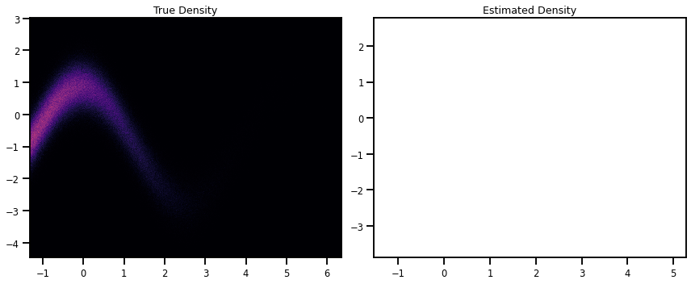
Sampling¶
X_g_samples = Normal(0.0, 1.0).sample(seed=123, sample_shape=(n_gen_samples, 2))
X_g_samples.shape
(10000, 2)
%%time
# generate samples in the latent domain
n_gen_samples = 10_000
X_g_samples = Normal(0.0, 1.0).sample(seed=123, sample_shape=(n_gen_samples, 2))
X_samples = final_bijector.inverse(X_g_samples)
# X_samples = np.array(gf_model.inverse(X_g_samples.block_until_ready()))
# # inverse transformation
# f = jax.jit(gf_model.inverse)
# X_samples = np.array(f(X_g_samples))
# # This way works too! But slower
# # generate samples in the latent domain
# n_gen_samples = 10_000
# # # inverse transformation
# X_samples = final_bijector.sample(seed=123, n_samples=n_gen_samples)
CPU times: user 1min 13s, sys: 1.99 s, total: 1min 15s
Wall time: 18.9 s
from scipy.stats import zscore
z = zscore(X_samples)
t.shape
(10000, 2)
np.abs(zscore(X_samples)).shape
(10000, 2)
X_samples_ = X_samples[np.abs(zscore(X_samples))<=3]
X_samples_.shape
(19826,)
X_samples.min(), X_samples.max()
(DeviceArray(-499.5, dtype=float32), DeviceArray(500.5, dtype=float32))
fig = corner.corner(X, color="blue", label="Original Data")
fig.suptitle("Original Data")
plt.show()
fig2 = corner.corner(X_samples_, color="purple")
fig2.suptitle("Generated Samples")
plt.show()
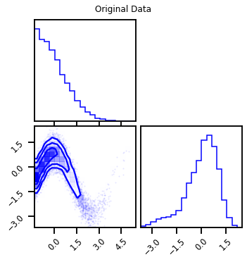
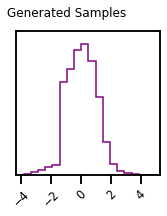